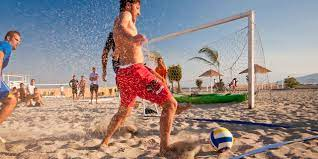

El fútbol playa comenzó en Brasil, más concretamente en la playa Leme de Río de Janeiro, y ha crecido para llegar a ser un deporte internacional consolidado. La participación de jugadores de fama internacional como el francés Éric Cantona, los españoles Míchel y Julio Salinas y los brasileños Romário, Júnior o Zico ha ayudado a ampliar la cobertura televisiva a más de 170 países de todo el mundo, haciendo del fútbol playa uno de los deportes profesionales con un crecimiento más rápido del mundo y provocando su conversión en un espectáculo comercial internacional.

El fútbol playa se ha jugado recreativamente en todo el mundo durante muchos años y en muchos formatos diferentes. En 1992, se crearon las bases del reglamento del juego en un evento piloto organizado por los socios de BSWW en Los Ángeles. En el verano siguiente, se organizó la primera competición de fútbol de playa profesional en Miami Beach, con la participación de equipos como los Estados Unidos, Brasil, Argentina e Italia. En abril de 1994, fue cubierto por transmisiones televisivas el primer acontecimiento de fútbol playa en la Playa Copacabana en Río de Janeiro y la ciudad organizó el primer Campeonato del Mundo de Fútbol de Playa un año más tarde. Este primer Campeonato del Mundo fue ganado por la nación anfitriona, siendo Brasil los primeros campeones en la historia de los Mundiales de Fútbol Playa. El éxito del torneo visto desde el interés comercial hizo que se celebraran más partidos, acrecentando el interés por este deporte en todo el mundo lo que dio lugar al Pro Beach Soccer Tour en 1996. El primer Pro Beach Soccer Tour incluyó un total de 60 partidos en dos años a través de Sudamérica, Europa, Asia y los Estados Unidos, atrayendo a importantes nombres tanto dentro como fuera del campo. El interés generado por el tour en Europa provocó la creación del Euro Beach Soccer League en 1998, proporcionando una infraestructura sólida que aumentaría el profesionalismo del espectáculo en todos los niveles. La EPBSL, ahora llamada Euro BS League, unió a los promotores de más allá del continente y dio satisfacción a las demandas de los medios de comunicación, patrocinadores y seguidores. Tras cuatro años desde su creación, el exitoso primer paso en la construcción de la legítima entidad Worldwide Competition Structure para el deporte del Fútbol Playa Profesional se había alcanzado. También ocurrieron acontecimientos clave en los organismos, la Beach Soccer Company trasladó su oficina central a Europa, inicialmente a Mónaco y finalmente a Barcelona,mantes de convertirse en la Pro Beach Soccer, S.L. en abril de 2000.
Un año después se unieron con la Octagon Koch Tavares, que había seguido organizando los Campeonatos Mundiales y acontecimientos en Sudamérica, para formar una sola entidad conocida como Beach Soccer Worldwide (BSWW), con el objetivo de unificar todos los torneos de la Pro Beach Soccer en el mundo bajo la misma estructura y proporcionando la representación exclusiva del deporte en los mayores patrocinadores, los medios de comunicación y la FIFA. La EPBSL también prosperaba, con la apasionante temporada de 2000 decidida en el partido de cierre del torneo final en el que España batió a Portugal en un encuentro intenso. La Americas League también tomó forma, con equipos de Norte y Sudamérica, mientras que el Pro Beach Soccer Tour amplió sus horizontes a Emiratos Árabes Unidos, Tailandia, México, Grecia, Japón, Australia y el Reino Unido. En los siguientes cuatro años, se consolidó este crecimiento por el progreso tanto dentro como fuera del campo, con el EPBSL surgiendo más fuerte que la competición de la Pro Beach Soccer en el mundo. En 2004, aproximadamente diecisiete naciones habían completado sus equipos, ampliándose a más de veinte para la Euro BS League en 2005, contribuyendo a la extensa cobertura televisiva y una demanda sin precedentes de promotores de más de setenta países que querían disputar los eventos. Tal interés permitió a la BSWW conseguir importantes patrocinios con multinacionales como McDonalds, Coca-cola o MasterCard, que aumentó su participación en 2004 y ahora es el patrocinador titular de la Euro BS League. El reconocimiento también llegó por parte de la FIFA, que se reunió con BSWW, la entidad principal de la creación y el crecimiento del fútbol playa, creando una colaboración muy prometedora. La colaboración se culminó en todo su esplendor en la Copa del Mundo de 2005, celebrada en la playa de Copacabana, Brasil. Francia ganó su primera Copa del Mundo y al año siguiente Brasil lo hizo en el mismo lugar. En España, se realiza anualmente el Circuito Nacional. Actualmente en el circuito nacional el campeón es el Steaua de Tirajana un equipo canario que ganó la última final disputada en Córdoba.